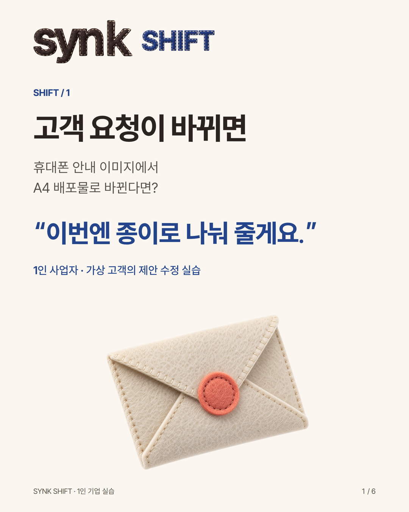
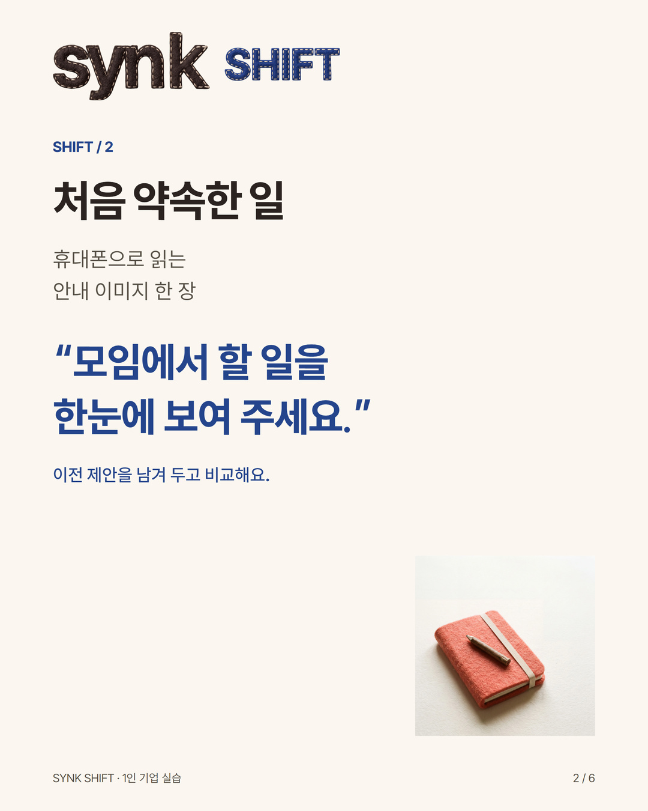
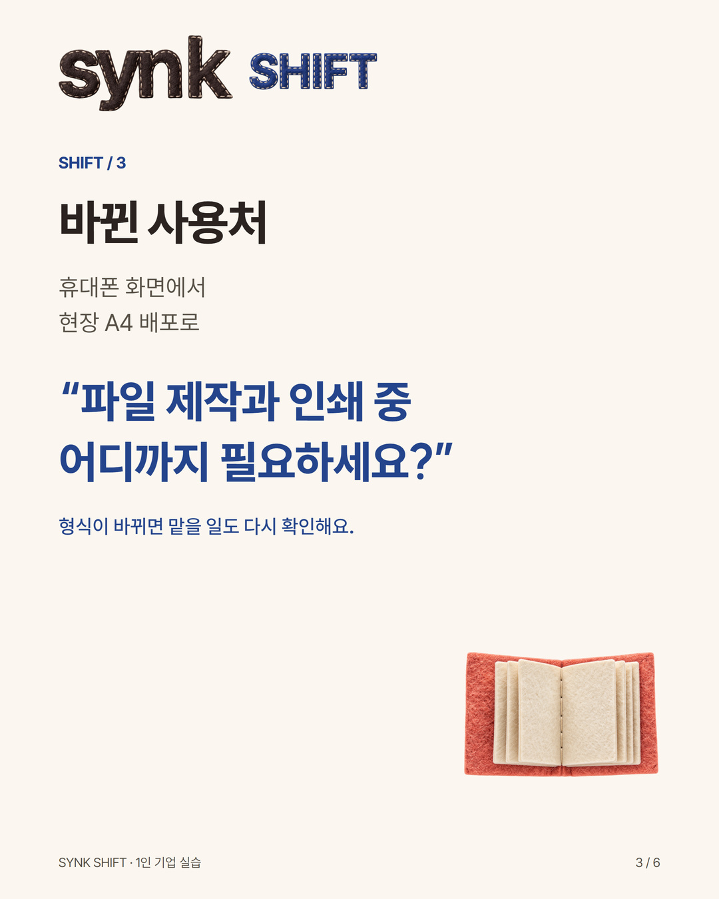
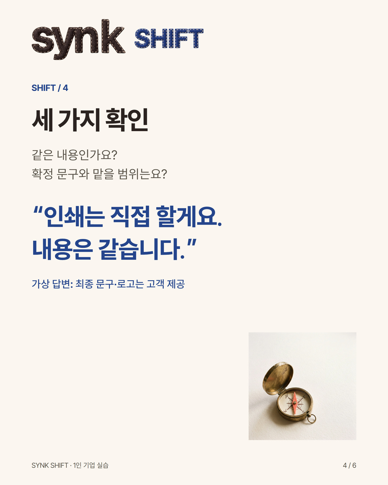
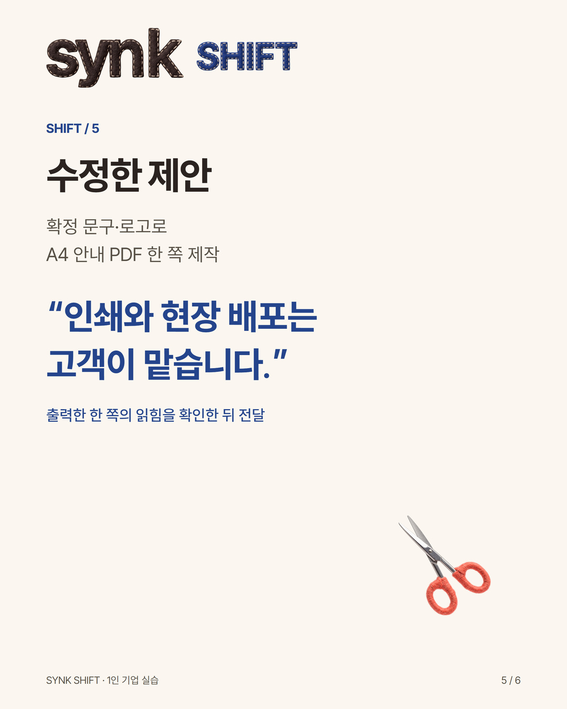
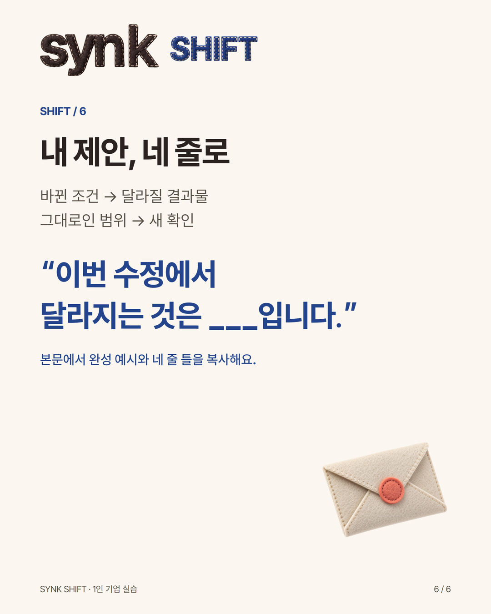

SHIFT · @synkbrief
고객 요청이 바뀌었을 때 제안 고치기: 휴대폰 이미지에서 A4 PDF로 | SYNK SHIFT
1인 사업자를 위한 가상 고객 실습. 휴대폰 안내 이미지가 A4 배포물로 바뀐 사례에서 확인 질문, 수정 제안, 복사해 쓰는 네 줄과 자기 확인 방법을 제공합니다.
고객이 휴대폰 안내 이미지를 A4 배포물로 바꿔 달라고 한다면, 제안의 어디를 고쳐야 할까요?
1인 사업자가 결과물과 맡을 범위를 다시 맞춰 보는 실습입니다.
가상 고객을 둔 공개 실습입니다. 실제 의뢰·고객 후기·판매 조건이 아닙니다.
처음 요청
‘모임에서 할 일을 한눈에 보여 주세요. 휴대폰으로 읽는 안내 이미지 한 장이 필요해요.’
처음 제안
‘확정 문구와 제공 로고로 휴대폰에서 읽는 안내 이미지 한 장을 제작합니다. 모임에서 할 일과 연락 정보를 먼저 읽히게 정리합니다.’
바뀐 요청
‘이번엔 현장에서 A4 종이로 나눠 줄게요.’
1. 먼저 세 가지를 확인합니다.
같은 내용을 인쇄하나요?
배포할 최종 문구와 로고가 정해졌나요?
파일 제작과 인쇄 중 어디까지 필요하신가요?
예시 고객 답변
‘내용은 같습니다. 확정 문구와 로고를 드릴게요. 인쇄와 배포는 직접 하겠습니다.’
2. 제안을 이렇게 고쳐봅니다.
‘확정 문구와 제공 로고를 사용해 A4 안내 PDF 한 쪽을 제작합니다. 인쇄와 현장 배포는 고객이 맡습니다. 배포일·파일 전달일·최종 문구·로고 사용 권한을 확인한 뒤 작업을 시작합니다. 실제 크기로 한 쪽을 출력해 작은 글자와 연락 정보가 읽히는지 확인하고 전달합니다.’
3. 내 제안에 복사할 네 줄
바뀐 조건: ___
달라질 결과물: ___
그대로인 범위: ___
새로 확인할 것: ___
마지막으로 처음 요청과 수정 제안을 나란히 읽어보세요. 바뀐 사용처가 반영됐는지, 맡기로 하지 않은 일을 새로 약속했는지 확인합니다. 비용과 일정이 달라지면 별도로 합의할 항목으로 남깁니다.
지금 네 줄을 복사해 내 일의 변경 요청 하나에 채워 보세요. 처음 제안도 지우지 않고 나란히 두면 무엇을 왜 고쳤는지 비교할 수 있습니다.
작성 자료 이름은 ‘요청이 바뀐 뒤, 제안 네 줄’입니다. 확인 질문·수정 이유·다른 상황까지 더 연습할 때 쓰는 자료이며, 이 본문의 예시와 네 줄만으로 마쳐도 됩니다. 실제 고객 자료를 공개하거나 댓글로 제출할 필요는 없습니다.





